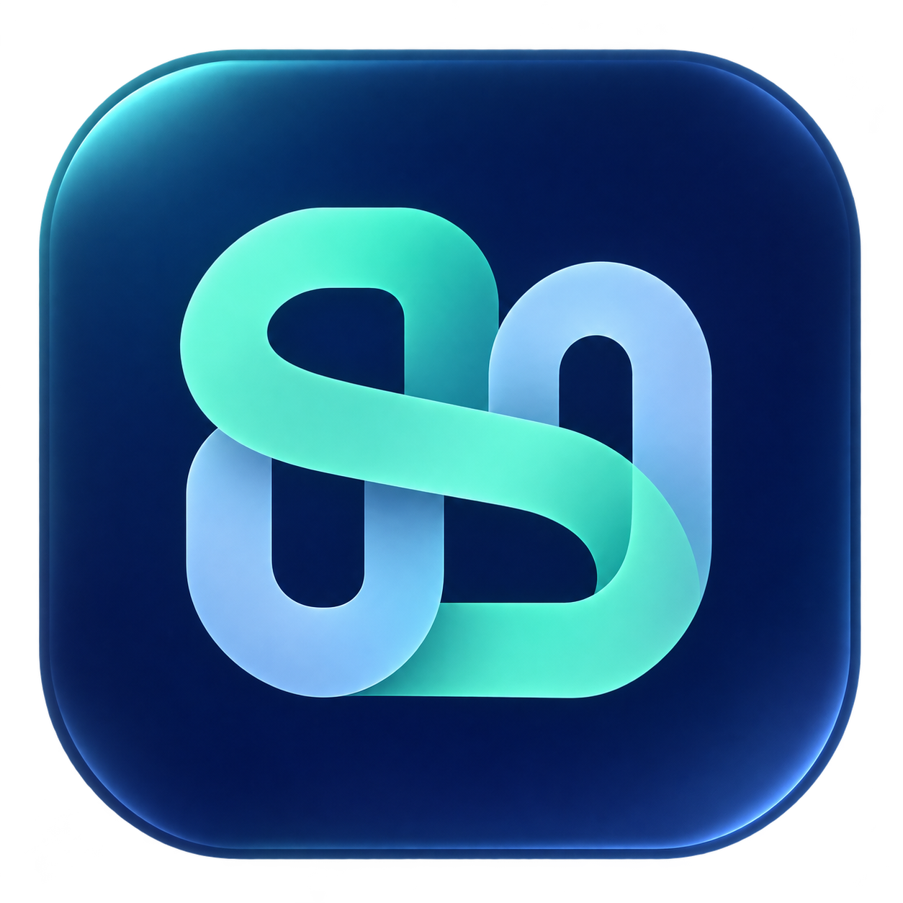

WORKSPACE PERSONAL
Semua koneksi, satu tempat.
Buka platform, pilih akun, dan lanjutkan percakapanmu.

Platform
Seluruh layananmu dalam satu workspace.
Belum ada favorit
Klik bintang pada platform agar mudah ditemukan di sini.
Membuka platform…
Menjaga tampilanmuEfek blur sedang diterapkan…
KONEKSI TERPUTUS